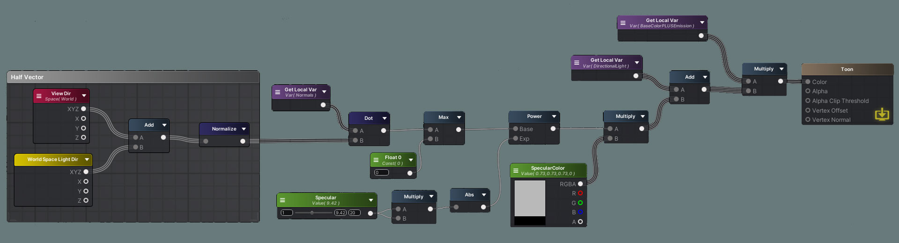

Toon Shader
This toon shader is based on the Blinn-Phong lighting model. It has the basic functions like directional lighting, specular lighting, and rim lighting and also includes emission and a toon ramp. The toon ramp texture plays a big part in the look of the shader so we can get many different effects by just adjusting this texture.
All we need is a texture for the toon ramp. This will be the main contributing factor to the look of the lighting. We can play with the number of steps, the transition between the steps, and even the color. You can also set up a simple scene with a variety of objects so we can test how the shader looks on different shapes.
First, we can make a TextureSample for the BaseColor texture. I like to multiply this with a TintColor, since this can be used to color objects without a texture or adjust the color of the texture. If you don’t want a tint on the texture, the color can just stay white.
In the BaseColor texture’s alpha channel, I added an emission mask. The areas in white will be emissive, and the areas in black won’t be. Multiply the mask with an HDR color as well as the BaseColor texture so the detail and color in the texture will be taken into account. With a bloom post-processing effect, we can get a nice glowing effect now.
For the directional light, we will use the basic NdotL formula, which is the normals of the surface dot the direction of the light. A NormalMap can also be added here by connecting it to the WorldNormal node. I made this into a local variable since we will be using these Normals for other lighting calculations.
The dot product will now become the UV’s for the toon ramp texture. This is the main way we can get the toon effect. Instead of using a texture, we could also get this effect with a Step function, but I prefer using a texture because it offers some more control.
We can multiply this with the LightAttenuation node, which contains the cast shadow information, and the LightColor node, which is the color of the directional light in the scene. Finally, I like to Add an AmbientColor to the toon shadow result since the shadows are a bit too dark right now. This represents a simplified form of bounce light and can be used to adjust the overall color of the shadow and object.
Finally, here are variations on the same scene with just a different toon ramp. The more steps there are in the toon ramp, the more “detailed” the light will be. Make sure to clamp the ToonRamp texture in the import properties or you will have incorrect results!
For specular lighting, we will need the dot product between the normals of the surface and the half vector. The half vector is the sum of the vectors of the light direction and the view direction. We have to take the view direction into account since the specular lighting depends on what angle the surface is being viewed. We can control the size of the specular reflection by raising the dot product to an exponent and adjusting it. I also multiplied the SpecularAmount with itself for more noticeable changes and better control. Finally, to color the light, we can multiply this with a SpecularColor and the LightColor.

To get the toon effect, we can run this through the Smoothstep function. We can also multiply this with a SpecularMap texture which can be used to mask out areas that shouldn’t have specular lighting. For example, shiny materials like metals will have more specular reflection and matte materials like wood won’t have any specular effect.
We can use rim lighting to simulate backlighting, and is a subtle but nice touch to our ton shader. We can use the Fresnel node, which highlights the surfaces facing away from the camera. We will repeat the NdotL formula we previously used for directional lighting. We can use this to mask out the Fresnel since we only want it to show on the parts of the object that is lit. We will also Step this to get hard edges for a toon effect and multiply it with a RimColor.
To blend the lighting together, we just need to add the DirectionalLight, SpecularLight, and RimLight together. Then we multiply the lighting with the Emission and BaseColor and we’re done!